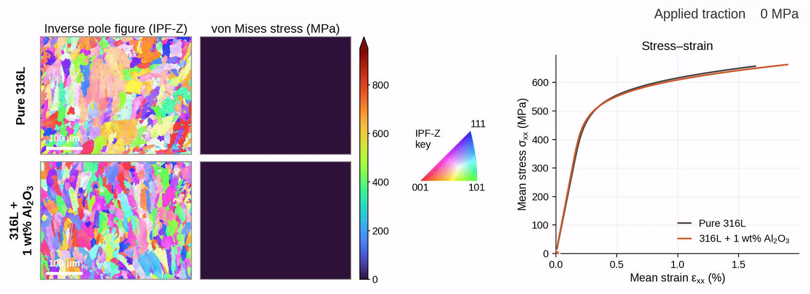

MICROSTRUCTURE-INFORMED MECHANICS
Crystal plasticity & local deformation
EBSD-informed models resolve heterogeneous deformation and local stress fields in LPBF 316L and Al₂O₃-reinforced materials. The visualization connects crystallographic orientation, applied loading, and the resulting mechanical response.
